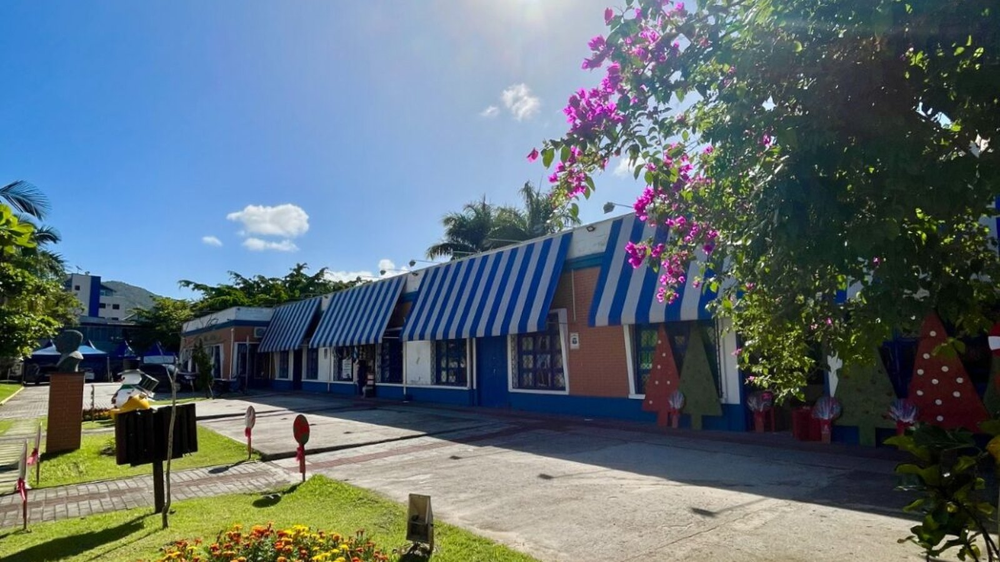

Costa Esmeralda · Cultura
Costa Esmeralda · CulturaFormação gratuita em liderança para quem vive de cultura tem 15 vagas na região, e a inscrição fecha nesta sexta
Outra chamada aberta na mesma semana, também pelo consórcio da região.
São três chamamentos com dinheiro federal da Política Nacional Aldir Blanc. Um deles paga bolsa de R$ 2,1 mil por mês a Mestras e Mestres das culturas tradicionais e populares.
Em 30 segundos · Modo de Leitura, formato original Santa Informa
A Prefeitura de Itapema, pela Secretaria de Cultura, abriu três editais de fomento que somam R$ 543 mil. O dinheiro vem do Governo Federal, pela Política Nacional Aldir Blanc (PNAB).
Edital nº 002/2026: R$ 390 mil para 23 projetos culturais. Entram pessoas físicas, MEIs, empresas e até grupos sem CNPJ. Exige dois anos de vínculo com o município e a execução vai até 11 meses.
Edital nº 003/2026: R$ 90 mil para um projeto continuado de 12 meses. Só para Pontos ou Pontões de Cultura certificados pelo Ministério da Cultura, com sede em Itapema.
Edital nº 004/2026: R$ 63 mil em cinco bolsas para Mestras e Mestres das Culturas Tradicionais e Populares. São R$ 2,1 mil por mês, por seis meses, com 20 horas semanais.
A inscrição vai até 13 de setembro, pela plataforma Mapa Cultural CIM-AMFRI.
EconomiaPublicada em Redação Santa Informa

Quem faz cultura em Itapema ganhou uma data para anotar: 13 de setembro. A Prefeitura, por meio da Secretaria de Cultura, abriu três editais de fomento que juntos destinam R$ 543 mil a iniciativas da cidade. O dinheiro é federal e chega pela Política Nacional Aldir Blanc de Fomento à Cultura, a PNAB. A inscrição nos três é feita pela plataforma Mapa Cultural CIM-AMFRI, a mesma que o consórcio de municípios da região já usa para outras chamadas.
O Edital nº 002/2026 concentra a maior fatia, R$ 390 mil, divididos em 23 projetos culturais. Podem se inscrever pessoas físicas, MEIs, pessoas jurídicas e também grupos ou coletivos sem CNPJ. Essa última porta importa: muita gente que toca cultura na cidade trabalha em grupo, sem empresa aberta, e costuma ficar de fora quando o edital exige documento de pessoa jurídica.
A exigência é ter no mínimo dois anos de vínculo com o município e atuação comprovada na área. Quem for selecionado tem prazo máximo de 11 meses para executar o que propôs. A avaliação considera o mérito cultural e os critérios escritos no edital.
O Edital nº 003/2026 é o mais fechado dos três. Escolhe um projeto continuado, com plano de trabalho de 12 meses e R$ 90 mil. Só concorre quem já é Ponto ou Pontão de Cultura certificado pelo Ministério da Cultura, com CNPJ e sede em Itapema. O projeto precisa prever formação, mostra artística e registro do que foi feito.
O Edital nº 004/2026 é o de perfil mais diferente. São R$ 63 mil em cinco bolsas para Mestras e Mestres das Culturas Tradicionais e Populares, gente reconhecida pela própria comunidade pelo que sabe fazer e passar adiante. Cada bolsa paga R$ 2,1 mil por mês durante seis meses, com carga de 20 horas semanais. É preciso ter pelo menos cinco anos de atuação cultural reconhecida e apresentar declaração de parceria assinada por ao menos um Ponto ou Pontão de Cultura certificado.
A secretária de Cultura, Ana Vedana, afirmou que os três editais alcançam segmentos diferentes e que a ideia é reconhecer quem faz cultura em Itapema. Quem preferir orientação presencial pode procurar o Espaço Cultural Nelson Santos, na Rua 112, nº 69, no Centro. Cada edital tem lista própria de documento e critério, então vale ler o texto inteiro antes de preencher a inscrição.
O resumo de 30 segundos está no topo e a versão completa é o texto acima. Aqui ficam as três leituras da casa sobre o mesmo assunto.
Clara, a otimista
Meio milhão de reais entrando na cultura de uma cidade do tamanho de Itapema é dinheiro que se enxerga. E o desenho dos editais é generoso na porta de entrada: coletivo sem CNPJ pode concorrer aos R$ 390 mil, o que raramente acontece.
A bolsa para Mestras e Mestres é a parte que mais me agrada. Reconhecer quem carrega saber tradicional, e pagar por isso durante seis meses, é tratar cultura popular como trabalho. Vinte horas por semana com R$ 2,1 mil no fim do mês muda a rotina de quem hoje ensina de graça.
Seu Prudêncio, o criterioso
Merece atenção o calendário. Da abertura até 13 de setembro sobram poucas semanas, e três editais exigem documento diferente cada um: comprovação de vínculo de dois anos, certificação do Ministério da Cultura, declaração de parceria assinada. Quem deixar para a última semana corre risco de perder por papel faltando, e não por falta de mérito.
Vale acompanhar também a prestação de contas. Projeto com 11 meses de execução e bolsa de seis meses geram relatório, e recurso da Aldir Blanc costuma ter regra federal própria de comprovação. Uma sugestão útil: guardar nota, foto e lista de presença desde o primeiro dia, porque refazer isso depois é o que mais atrasa pagamento.
Dito tudo isso, a estrutura está correta. Editais publicados, valores abertos, critério escrito e uma plataforma única para inscrição é bem melhor do que distribuir apoio caso a caso. Itapema está fazendo do jeito que dá para conferir depois.
Caco, o sarcástico
R$ 543 mil para a cultura da cidade. Menos do que custa um apartamento de frente para o mar na Meia Praia, mas não vamos estragar o momento.
Agora eu preciso virar Mestre reconhecido há cinco anos, com declaração de parceria de um Pontão certificado pelo Ministério. Tudo bem. Sou mestre em achar vaga na Avenida Nereu Ramos em janeiro, mas desconfio que não conta.
E a inscrição é toda pela plataforma. Claro que é. Nada mais tradicional e popular do que preencher formulário na internet até 13 de setembro.
Fontes: Prefeitura de Itapema, publicação de 20 de agosto de 2026 sobre os editais nº 002/2026, nº 003/2026 e nº 004/2026 da Secretaria de Cultura, com recursos da Política Nacional Aldir Blanc. Inscrições na plataforma Mapa Cultural CIM-AMFRI.
Costa Esmeralda · CulturaOutra chamada aberta na mesma semana, também pelo consórcio da região.
 Itapema · Cultura
Itapema · CulturaO que a cultura da cidade já produz com o que tem hoje.
 Itapema · Cultura
Itapema · CulturaComo a cidade vinha selecionando quem sobe ao palco.